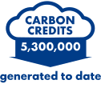
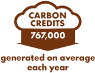
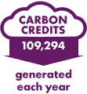
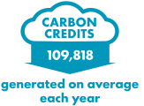

Carbon Offset Projects
The Guatemalan Conservation Coast
Developed by Fundación para el Ecodesarrollo y la Conservación (FUNDAECO)
As a wintering and stopover site for 120 species of migratory birds, Izabal, on the Caribbean coast of Guatemala, is crucial for biodiversity conservation.
The sale of carbon credits helps finance new nature reserves while supporting existing natural forest, which is under threat from deforestation and 'slash and burn' agriculture and cattle ranching.
Not only does the project area protect wildlife, it's also critical to the local water supply, building up coastal defences, and supporting local agriculture. Its revenue boosts agroforestry ecosystems and eco-tourism, as well as providing resources to support community programmes, such as health and education for women and girls.
 Carbon standard Verified Carbon standard CCB Standards
QINGHAI AFFORESTATION PROJECT
Developed by Shell and Climate Bridge
In Qinghai, the fourth largest province in China, most of the population works in irrigation farming and cattle and sheep herding, but desertification in the region has degraded the quality of land, soil and water, negatively impacting local livelihoods.
By planting forests, this project is working to combat desertification, preserve water and improve soil quality, which will enhance the local environment and the quality of life for communities.
In addition, the project also brings economic and social benefits for locals by providing jobs and training in forest management.
 Carbon standard Verified Carbon standard CCB Standards
HOUJI SOLAR COOKING PROJECT
Developed by Sirreon Technology & Development (Beijing) Co., Ltd
Most rural households in Zhenping County in the Henan province of China use coal-fired stoves for cooking and boiling water, leading to significant greenhouse gas emissions and air pollution that's a health risk to residents. This project aims to address the situation by providing 50,000 solar cookers to homes, enabling rural families to efficiently substitute solar energy for coal. The solar cookers also reduce fuel costs and health-damaging air pollution.
 Carbon standard Gold Standard
PARQUE EOLICO MALDONADO, URUGUAY
Developed by R del Sur S.A
The project generates electricity from renewable sources through the operation of a 50 MW wind farm, located in Maldonado, in the Southeast region of Uruguay.
This wind farm consists of 25 turbines and the energy generated by the project is supplied to the national grid of Uruguay through a substation annexed to the park. The project achieves emissions reduction through the substitution of thermal/fossil fuel energy generation.
 Carbon standard Verified Carbon standard